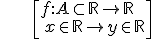
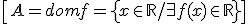
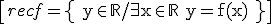
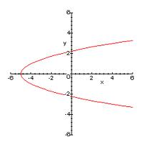
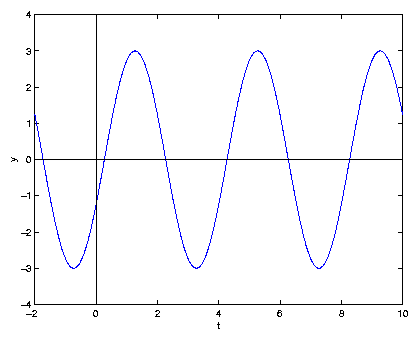
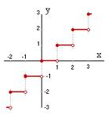
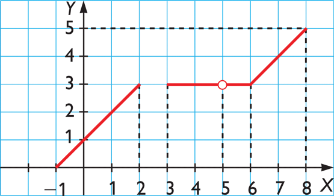
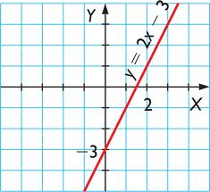
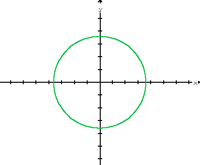

Una función f, es una correspondencia entre dos conjuntos de modo que a cada elemento del primer conjunto le corresponde exactamente un elemento del segundo conjunto.
Una función real de variable real es una función entre los números reales:

El dominio de una función es el subconjunto del conjunto inicial de los elementos que tienen imagen

El recorrido o imagen es el subconjunto del conjunto final de elementos que son imagen de un elemento del dominio:

\[recf=\operatorname\left\{ y\in \mathbb{R}/\exists x\in \mathbb{R}\quad y=f(x) \right\}\]
Ejemplo 1:
 NO es función
Ejemplo 2:
 Dominio = R Recorrido = [-3,3]
Ejemplo 3. Función parte entera:

Dominio = R Recorrido = Z
Ejercicio. Decide si las siguientes correspondencias son funciones o no y, si lo son, encuentra su dominio y recorrido:
a)

b)

c)

Soluciones:
a) Sí es función, dom = [-1,2]U[3,5)U(5,8], recorrido = [0,5]
b) Sí es función dom = recorrido = R
c) No es función